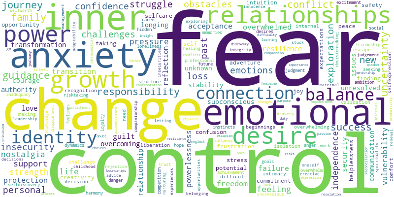
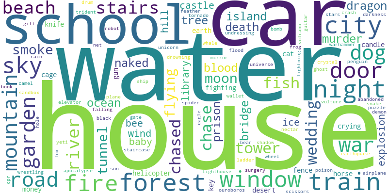

<h1 style="text-align:center;">Global Dreamverse State</h1>
<h2 style="text-align:center;">February 19, 2024</h2>
<div style="padding: 80px;"><html>
    <head>
        <meta charset="utf-8">
        
            <script src="lib/bindings/utils.js"></script>
            <link rel="stylesheet" href="https://cdnjs.cloudflare.com/ajax/libs/vis-network/9.1.2/dist/dist/vis-network.min.css" integrity="sha512-WgxfT5LWjfszlPHXRmBWHkV2eceiWTOBvrKCNbdgDYTHrT2AeLCGbF4sZlZw3UMN3WtL0tGUoIAKsu8mllg/XA==" crossorigin="anonymous" referrerpolicy="no-referrer" />
            <script src="https://cdnjs.cloudflare.com/ajax/libs/vis-network/9.1.2/dist/vis-network.min.js" integrity="sha512-LnvoEWDFrqGHlHmDD2101OrLcbsfkrzoSpvtSQtxK3RMnRV0eOkhhBN2dXHKRrUU8p2DGRTk35n4O8nWSVe1mQ==" crossorigin="anonymous" referrerpolicy="no-referrer"></script>
            
        
<center>
<h1></h1>
</center>

<!-- <link rel="stylesheet" href="../node_modules/vis/dist/vis.min.css" type="text/css" />
<script type="text/javascript" src="../node_modules/vis/dist/vis.js"> </script>-->
        <link
          href="https://cdn.jsdelivr.net/npm/bootstrap@5.0.0-beta3/dist/css/bootstrap.min.css"
          rel="stylesheet"
          integrity="sha384-eOJMYsd53ii+scO/bJGFsiCZc+5NDVN2yr8+0RDqr0Ql0h+rP48ckxlpbzKgwra6"
          crossorigin="anonymous"
        />
        <script
          src="https://cdn.jsdelivr.net/npm/bootstrap@5.0.0-beta3/dist/js/bootstrap.bundle.min.js"
          integrity="sha384-JEW9xMcG8R+pH31jmWH6WWP0WintQrMb4s7ZOdauHnUtxwoG2vI5DkLtS3qm9Ekf"
          crossorigin="anonymous"
        ></script>


        <center>
          <h1></h1>
        </center>
        <style type="text/css">

             #mynetwork {
                 width: 100%;
                 height: 750px;
                 background-color: #2b252f;
                 border: 1px solid lightgray;
                 position: relative;
                 float: left;
             }

             
             #loadingBar {
                 position:absolute;
                 top:0px;
                 left:0px;
                 width: 100%;
                 height: 750px;
                 background-color:rgba(200,200,200,0.8);
                 -webkit-transition: all 0.5s ease;
                 -moz-transition: all 0.5s ease;
                 -ms-transition: all 0.5s ease;
                 -o-transition: all 0.5s ease;
                 transition: all 0.5s ease;
                 opacity:1;
             }

             #bar {
                 position:absolute;
                 top:0px;
                 left:0px;
                 width:20px;
                 height:20px;
                 margin:auto auto auto auto;
                 border-radius:11px;
                 border:2px solid rgba(30,30,30,0.05);
                 background: rgb(0, 173, 246); /* Old browsers */
                 box-shadow: 2px 0px 4px rgba(0,0,0,0.4);
             }

             #border {
                 position:absolute;
                 top:10px;
                 left:10px;
                 width:500px;
                 height:23px;
                 margin:auto auto auto auto;
                 box-shadow: 0px 0px 4px rgba(0,0,0,0.2);
                 border-radius:10px;
             }

             #text {
                 position:absolute;
                 top:8px;
                 left:530px;
                 width:30px;
                 height:50px;
                 margin:auto auto auto auto;
                 font-size:22px;
                 color: #000000;
             }

             div.outerBorder {
                 position:relative;
                 top:400px;
                 width:600px;
                 height:44px;
                 margin:auto auto auto auto;
                 border:8px solid rgba(0,0,0,0.1);
                 background: rgb(252,252,252); /* Old browsers */
                 background: -moz-linear-gradient(top,  rgba(252,252,252,1) 0%, rgba(237,237,237,1) 100%); /* FF3.6+ */
                 background: -webkit-gradient(linear, left top, left bottom, color-stop(0%,rgba(252,252,252,1)), color-stop(100%,rgba(237,237,237,1))); /* Chrome,Safari4+ */
                 background: -webkit-linear-gradient(top,  rgba(252,252,252,1) 0%,rgba(237,237,237,1) 100%); /* Chrome10+,Safari5.1+ */
                 background: -o-linear-gradient(top,  rgba(252,252,252,1) 0%,rgba(237,237,237,1) 100%); /* Opera 11.10+ */
                 background: -ms-linear-gradient(top,  rgba(252,252,252,1) 0%,rgba(237,237,237,1) 100%); /* IE10+ */
                 background: linear-gradient(to bottom,  rgba(252,252,252,1) 0%,rgba(237,237,237,1) 100%); /* W3C */
                 filter: progid:DXImageTransform.Microsoft.gradient( startColorstr='#fcfcfc', endColorstr='#ededed',GradientType=0 ); /* IE6-9 */
                 border-radius:72px;
                 box-shadow: 0px 0px 10px rgba(0,0,0,0.2);
             }
             

             

             
        </style>
    </head>


    <body>
        <div class="card" style="width: 100%">
            
            
            <div id="mynetwork" class="card-body"></div>
        </div>

        
            <div id="loadingBar">
              <div class="outerBorder">
                <div id="text">0%</div>
                <div id="border">
                  <div id="bar"></div>
                </div>
              </div>
            </div>
        
        

        <script type="text/javascript">

              // initialize global variables.
              var edges;
              var nodes;
              var allNodes;
              var allEdges;
              var nodeColors;
              var originalNodes;
              var network;
              var container;
              var options, data;
              var filter = {
                  item : '',
                  property : '',
                  value : []
              };

              

              

              // This method is responsible for drawing the graph, returns the drawn network
              function drawGraph() {
                  var container = document.getElementById('mynetwork');

                  

                  // parsing and collecting nodes and edges from the python
                  nodes = new vis.DataSet([{"color": "red", "font": {"color": "white"}, "id": "anxiety", "label": "anxiety", "shape": "dot", "title": "anxiety"}, {"color": "red", "font": {"color": "white"}, "id": "fear", "label": "fear", "shape": "dot", "title": "fear"}, {"color": "purple", "font": {"color": "white"}, "id": "relationships", "label": "relationships", "shape": "dot", "title": "relationships"}, {"color": "purple", "font": {"color": "white"}, "id": "powerlessness", "label": "powerlessness", "shape": "dot", "title": "powerlessness"}, {"color": "purple", "font": {"color": "white"}, "id": "flying", "label": "flying", "shape": "dot", "title": "flying"}, {"color": "purple", "font": {"color": "white"}, "id": "responsibility", "label": "responsibility", "shape": "dot", "title": "responsibility"}, {"color": "purple", "font": {"color": "white"}, "id": "pressure", "label": "pressure", "shape": "dot", "title": "pressure"}, {"color": "purple", "font": {"color": "white"}, "id": "unresolved issues", "label": "unresolved issues", "shape": "dot", "title": "unresolved issues"}, {"color": "purple", "font": {"color": "white"}, "id": "achievement", "label": "achievement", "shape": "dot", "title": "achievement"}, {"color": "purple", "font": {"color": "white"}, "id": "resilience", "label": "resilience", "shape": "dot", "title": "resilience"}, {"color": "red", "font": {"color": "white"}, "id": "change", "label": "change", "shape": "dot", "title": "change"}, {"color": "red", "font": {"color": "white"}, "id": "house", "label": "house", "shape": "dot", "title": "house"}, {"color": "purple", "font": {"color": "white"}, "id": "stress", "label": "stress", "shape": "dot", "title": "stress"}, {"color": "purple", "font": {"color": "white"}, "id": "guilt", "label": "guilt", "shape": "dot", "title": "guilt"}, {"color": "purple", "font": {"color": "white"}, "id": "uncertainty", "label": "uncertainty", "shape": "dot", "title": "uncertainty"}, {"color": "red", "font": {"color": "white"}, "id": "control", "label": "control", "shape": "dot", "title": "control"}, {"color": "purple", "font": {"color": "white"}, "id": "loss", "label": "loss", "shape": "dot", "title": "loss"}, {"color": "red", "font": {"color": "white"}, "id": "war", "label": "war", "shape": "dot", "title": "war"}, {"color": "purple", "font": {"color": "white"}, "id": "authority", "label": "authority", "shape": "dot", "title": "authority"}, {"color": "purple", "font": {"color": "white"}, "id": "transition", "label": "transition", "shape": "dot", "title": "transition"}, {"color": "red", "font": {"color": "white"}, "id": "city", "label": "city", "shape": "dot", "title": "city"}, {"color": "purple", "font": {"color": "white"}, "id": "confusion", "label": "confusion", "shape": "dot", "title": "confusion"}, {"color": "purple", "font": {"color": "white"}, "id": "validation", "label": "validation", "shape": "dot", "title": "validation"}, {"color": "red", "font": {"color": "white"}, "id": "protection", "label": "protection", "shape": "dot", "title": "protection"}, {"color": "red", "font": {"color": "white"}, "id": "car", "label": "car", "shape": "dot", "title": "car"}, {"color": "purple", "font": {"color": "white"}, "id": "night", "label": "night", "shape": "dot", "title": "night"}, {"color": "purple", "font": {"color": "white"}, "id": "guidance", "label": "guidance", "shape": "dot", "title": "guidance"}, {"color": "purple", "font": {"color": "white"}, "id": "identity", "label": "identity", "shape": "dot", "title": "identity"}, {"color": "purple", "font": {"color": "white"}, "id": "train", "label": "train", "shape": "dot", "title": "train"}, {"color": "purple", "font": {"color": "white"}, "id": "safety", "label": "safety", "shape": "dot", "title": "safety"}, {"color": "purple", "font": {"color": "white"}, "id": "door", "label": "door", "shape": "dot", "title": "door"}, {"color": "purple", "font": {"color": "white"}, "id": "worry", "label": "worry", "shape": "dot", "title": "worry"}, {"color": "purple", "font": {"color": "white"}, "id": "danger", "label": "danger", "shape": "dot", "title": "danger"}, {"color": "purple", "font": {"color": "white"}, "id": "obstacles", "label": "obstacles", "shape": "dot", "title": "obstacles"}, {"color": "purple", "font": {"color": "white"}, "id": "selfdiscovery", "label": "selfdiscovery", "shape": "dot", "title": "selfdiscovery"}, {"color": "purple", "font": {"color": "white"}, "id": "challenges", "label": "challenges", "shape": "dot", "title": "challenges"}, {"color": "purple", "font": {"color": "white"}, "id": "success", "label": "success", "shape": "dot", "title": "success"}, {"color": "purple", "font": {"color": "white"}, "id": "courage", "label": "courage", "shape": "dot", "title": "courage"}, {"color": "purple", "font": {"color": "white"}, "id": "insecurity", "label": "insecurity", "shape": "dot", "title": "insecurity"}, {"color": "purple", "font": {"color": "white"}, "id": "selfcare", "label": "selfcare", "shape": "dot", "title": "selfcare"}, {"color": "purple", "font": {"color": "white"}, "id": "fire", "label": "fire", "shape": "dot", "title": "fire"}, {"color": "red", "font": {"color": "white"}, "id": "water", "label": "water", "shape": "dot", "title": "water"}, {"color": "purple", "font": {"color": "white"}, "id": "window", "label": "window", "shape": "dot", "title": "window"}, {"color": "purple", "font": {"color": "white"}, "id": "expectations", "label": "expectations", "shape": "dot", "title": "expectations"}, {"color": "purple", "font": {"color": "white"}, "id": "school", "label": "school", "shape": "dot", "title": "school"}, {"color": "purple", "font": {"color": "white"}, "id": "security", "label": "security", "shape": "dot", "title": "security"}, {"color": "purple", "font": {"color": "white"}, "id": "garden", "label": "garden", "shape": "dot", "title": "garden"}, {"color": "purple", "font": {"color": "white"}, "id": "struggle", "label": "struggle", "shape": "dot", "title": "struggle"}, {"color": "purple", "font": {"color": "white"}, "id": "creativity", "label": "creativity", "shape": "dot", "title": "creativity"}, {"color": "purple", "font": {"color": "white"}, "id": "tower", "label": "tower", "shape": "dot", "title": "tower"}, {"color": "purple", "font": {"color": "white"}, "id": "resentment", "label": "resentment", "shape": "dot", "title": "resentment"}, {"color": "purple", "font": {"color": "white"}, "id": "failure", "label": "failure", "shape": "dot", "title": "failure"}, {"color": "purple", "font": {"color": "white"}, "id": "confrontation", "label": "confrontation", "shape": "dot", "title": "confrontation"}, {"color": "purple", "font": {"color": "white"}, "id": "exploration", "label": "exploration", "shape": "dot", "title": "exploration"}, {"color": "purple", "font": {"color": "white"}, "id": "growth", "label": "growth", "shape": "dot", "title": "growth"}, {"color": "purple", "font": {"color": "white"}, "id": "transformation", "label": "transformation", "shape": "dot", "title": "transformation"}, {"color": "purple", "font": {"color": "white"}, "id": "strength", "label": "strength", "shape": "dot", "title": "strength"}, {"color": "purple", "font": {"color": "white"}, "id": "power", "label": "power", "shape": "dot", "title": "power"}, {"color": "purple", "font": {"color": "white"}, "id": "compassion", "label": "compassion", "shape": "dot", "title": "compassion"}, {"color": "purple", "font": {"color": "white"}, "id": "friendship", "label": "friendship", "shape": "dot", "title": "friendship"}, {"color": "purple", "font": {"color": "white"}, "id": "overwhelm", "label": "overwhelm", "shape": "dot", "title": "overwhelm"}, {"color": "purple", "font": {"color": "white"}, "id": "chased", "label": "chased", "shape": "dot", "title": "chased"}, {"color": "purple", "font": {"color": "white"}, "id": "commitment", "label": "commitment", "shape": "dot", "title": "commitment"}, {"color": "purple", "font": {"color": "white"}, "id": "support", "label": "support", "shape": "dot", "title": "support"}, {"color": "purple", "font": {"color": "white"}, "id": "personal growth", "label": "personal growth", "shape": "dot", "title": "personal growth"}, {"color": "purple", "font": {"color": "white"}, "id": "fence", "label": "fence", "shape": "dot", "title": "fence"}, {"color": "purple", "font": {"color": "white"}, "id": "frustration", "label": "frustration", "shape": "dot", "title": "frustration"}, {"color": "purple", "font": {"color": "white"}, "id": "anger", "label": "anger", "shape": "dot", "title": "anger"}, {"color": "purple", "font": {"color": "white"}, "id": "nurturing", "label": "nurturing", "shape": "dot", "title": "nurturing"}, {"color": "purple", "font": {"color": "white"}, "id": "cat", "label": "cat", "shape": "dot", "title": "cat"}, {"color": "purple", "font": {"color": "white"}, "id": "death", "label": "death", "shape": "dot", "title": "death"}, {"color": "purple", "font": {"color": "white"}, "id": "knife", "label": "knife", "shape": "dot", "title": "knife"}, {"color": "purple", "font": {"color": "white"}, "id": "dragon", "label": "dragon", "shape": "dot", "title": "dragon"}, {"color": "purple", "font": {"color": "white"}, "id": "vulnerability", "label": "vulnerability", "shape": "dot", "title": "vulnerability"}, {"color": "purple", "font": {"color": "white"}, "id": "leadership", "label": "leadership", "shape": "dot", "title": "leadership"}, {"color": "purple", "font": {"color": "white"}, "id": "independence", "label": "independence", "shape": "dot", "title": "independence"}, {"color": "purple", "font": {"color": "white"}, "id": "conflict", "label": "conflict", "shape": "dot", "title": "conflict"}, {"color": "purple", "font": {"color": "white"}, "id": "challenge", "label": "challenge", "shape": "dot", "title": "challenge"}, {"color": "purple", "font": {"color": "white"}, "id": "learning", "label": "learning", "shape": "dot", "title": "learning"}, {"color": "purple", "font": {"color": "white"}, "id": "helicopter", "label": "helicopter", "shape": "dot", "title": "helicopter"}, {"color": "purple", "font": {"color": "white"}, "id": "knowledge", "label": "knowledge", "shape": "dot", "title": "knowledge"}, {"color": "purple", "font": {"color": "white"}, "id": "wisdom", "label": "wisdom", "shape": "dot", "title": "wisdom"}, {"color": "purple", "font": {"color": "white"}, "id": "library", "label": "library", "shape": "dot", "title": "library"}, {"color": "purple", "font": {"color": "white"}, "id": "risktaking", "label": "risktaking", "shape": "dot", "title": "risktaking"}, {"color": "purple", "font": {"color": "white"}, "id": "forest", "label": "forest", "shape": "dot", "title": "forest"}, {"color": "purple", "font": {"color": "white"}, "id": "adventure", "label": "adventure", "shape": "dot", "title": "adventure"}, {"color": "purple", "font": {"color": "white"}, "id": "mountain", "label": "mountain", "shape": "dot", "title": "mountain"}, {"color": "purple", "font": {"color": "white"}, "id": "beauty", "label": "beauty", "shape": "dot", "title": "beauty"}, {"color": "purple", "font": {"color": "white"}, "id": "selfexpression", "label": "selfexpression", "shape": "dot", "title": "selfexpression"}, {"color": "purple", "font": {"color": "white"}, "id": "freedom", "label": "freedom", "shape": "dot", "title": "freedom"}, {"color": "purple", "font": {"color": "white"}, "id": "castle", "label": "castle", "shape": "dot", "title": "castle"}, {"color": "purple", "font": {"color": "white"}, "id": "overwhelmed", "label": "overwhelmed", "shape": "dot", "title": "overwhelmed"}, {"color": "purple", "font": {"color": "white"}, "id": "ocean", "label": "ocean", "shape": "dot", "title": "ocean"}, {"color": "purple", "font": {"color": "white"}, "id": "liberation", "label": "liberation", "shape": "dot", "title": "liberation"}, {"color": "purple", "font": {"color": "white"}, "id": "moon", "label": "moon", "shape": "dot", "title": "moon"}, {"color": "purple", "font": {"color": "white"}, "id": "peace", "label": "peace", "shape": "dot", "title": "peace"}, {"color": "purple", "font": {"color": "white"}, "id": "stability", "label": "stability", "shape": "dot", "title": "stability"}, {"color": "purple", "font": {"color": "white"}, "id": "attraction", "label": "attraction", "shape": "dot", "title": "attraction"}, {"color": "purple", "font": {"color": "white"}, "id": "confidence", "label": "confidence", "shape": "dot", "title": "confidence"}, {"color": "purple", "font": {"color": "white"}, "id": "acceptance", "label": "acceptance", "shape": "dot", "title": "acceptance"}, {"color": "purple", "font": {"color": "white"}, "id": "journey", "label": "journey", "shape": "dot", "title": "journey"}, {"color": "purple", "font": {"color": "white"}, "id": "emotions", "label": "emotions", "shape": "dot", "title": "emotions"}, {"color": "purple", "font": {"color": "white"}, "id": "connection", "label": "connection", "shape": "dot", "title": "connection"}, {"color": "purple", "font": {"color": "white"}, "id": "intimacy", "label": "intimacy", "shape": "dot", "title": "intimacy"}, {"color": "purple", "font": {"color": "white"}, "id": "contentment", "label": "contentment", "shape": "dot", "title": "contentment"}, {"color": "purple", "font": {"color": "white"}, "id": "nostalgia", "label": "nostalgia", "shape": "dot", "title": "nostalgia"}, {"color": "purple", "font": {"color": "white"}, "id": "progress", "label": "progress", "shape": "dot", "title": "progress"}, {"color": "purple", "font": {"color": "white"}, "id": "determination", "label": "determination", "shape": "dot", "title": "determination"}, {"color": "purple", "font": {"color": "white"}, "id": "beach", "label": "beach", "shape": "dot", "title": "beach"}, {"color": "purple", "font": {"color": "white"}, "id": "renewal", "label": "renewal", "shape": "dot", "title": "renewal"}, {"color": "purple", "font": {"color": "white"}, "id": "escape", "label": "escape", "shape": "dot", "title": "escape"}, {"color": "purple", "font": {"color": "white"}, "id": "joy", "label": "joy", "shape": "dot", "title": "joy"}, {"color": "purple", "font": {"color": "white"}, "id": "emotional connection", "label": "emotional connection", "shape": "dot", "title": "emotional connection"}, {"color": "purple", "font": {"color": "white"}, "id": "childhood", "label": "childhood", "shape": "dot", "title": "childhood"}, {"color": "purple", "font": {"color": "white"}, "id": "fighting", "label": "fighting", "shape": "dot", "title": "fighting"}, {"color": "purple", "font": {"color": "white"}, "id": "love", "label": "love", "shape": "dot", "title": "love"}, {"color": "purple", "font": {"color": "white"}, "id": "smoke", "label": "smoke", "shape": "dot", "title": "smoke"}, {"color": "purple", "font": {"color": "white"}, "id": "longing past", "label": "longing past", "shape": "dot", "title": "longing past"}, {"color": "purple", "font": {"color": "white"}, "id": "family", "label": "family", "shape": "dot", "title": "family"}, {"color": "purple", "font": {"color": "white"}, "id": "balance", "label": "balance", "shape": "dot", "title": "balance"}, {"color": "purple", "font": {"color": "white"}, "id": "naked", "label": "naked", "shape": "dot", "title": "naked"}, {"color": "purple", "font": {"color": "white"}, "id": "undressing", "label": "undressing", "shape": "dot", "title": "undressing"}, {"color": "purple", "font": {"color": "white"}, "id": "wallet", "label": "wallet", "shape": "dot", "title": "wallet"}, {"color": "purple", "font": {"color": "white"}, "id": "reconnection", "label": "reconnection", "shape": "dot", "title": "reconnection"}, {"color": "purple", "font": {"color": "white"}, "id": "reflection", "label": "reflection", "shape": "dot", "title": "reflection"}, {"color": "purple", "font": {"color": "white"}, "id": "ambition", "label": "ambition", "shape": "dot", "title": "ambition"}, {"color": "purple", "font": {"color": "white"}, "id": "sky", "label": "sky", "shape": "dot", "title": "sky"}, {"color": "purple", "font": {"color": "white"}, "id": "loneliness", "label": "loneliness", "shape": "dot", "title": "loneliness"}, {"color": "purple", "font": {"color": "white"}, "id": "work", "label": "work", "shape": "dot", "title": "work"}, {"color": "purple", "font": {"color": "white"}, "id": "detachment", "label": "detachment", "shape": "dot", "title": "detachment"}, {"color": "purple", "font": {"color": "white"}, "id": "chase", "label": "chase", "shape": "dot", "title": "chase"}, {"color": "purple", "font": {"color": "white"}, "id": "fear failure", "label": "fear failure", "shape": "dot", "title": "fear failure"}, {"color": "purple", "font": {"color": "white"}, "id": "loss control", "label": "loss control", "shape": "dot", "title": "loss control"}, {"color": "purple", "font": {"color": "white"}, "id": "boundaries", "label": "boundaries", "shape": "dot", "title": "boundaries"}, {"color": "purple", "font": {"color": "white"}, "id": "spirituality", "label": "spirituality", "shape": "dot", "title": "spirituality"}, {"color": "purple", "font": {"color": "white"}, "id": "feeling overwhelmed", "label": "feeling overwhelmed", "shape": "dot", "title": "feeling overwhelmed"}, {"color": "purple", "font": {"color": "white"}, "id": "loyalty", "label": "loyalty", "shape": "dot", "title": "loyalty"}, {"color": "purple", "font": {"color": "white"}, "id": "hope", "label": "hope", "shape": "dot", "title": "hope"}, {"color": "purple", "font": {"color": "white"}, "id": "tree", "label": "tree", "shape": "dot", "title": "tree"}, {"color": "purple", "font": {"color": "white"}, "id": "comfort", "label": "comfort", "shape": "dot", "title": "comfort"}, {"color": "purple", "font": {"color": "white"}, "id": "mentorship", "label": "mentorship", "shape": "dot", "title": "mentorship"}, {"color": "purple", "font": {"color": "white"}, "id": "dog", "label": "dog", "shape": "dot", "title": "dog"}, {"color": "purple", "font": {"color": "white"}, "id": "wedding", "label": "wedding", "shape": "dot", "title": "wedding"}, {"color": "purple", "font": {"color": "white"}, "id": "bridge", "label": "bridge", "shape": "dot", "title": "bridge"}, {"color": "purple", "font": {"color": "white"}, "id": "chaos", "label": "chaos", "shape": "dot", "title": "chaos"}, {"color": "purple", "font": {"color": "white"}, "id": "river", "label": "river", "shape": "dot", "title": "river"}, {"color": "purple", "font": {"color": "white"}, "id": "selfempowerment", "label": "selfempowerment", "shape": "dot", "title": "selfempowerment"}, {"color": "purple", "font": {"color": "white"}, "id": "flood", "label": "flood", "shape": "dot", "title": "flood"}, {"color": "purple", "font": {"color": "white"}, "id": "fish", "label": "fish", "shape": "dot", "title": "fish"}, {"color": "purple", "font": {"color": "white"}, "id": "fun", "label": "fun", "shape": "dot", "title": "fun"}, {"color": "purple", "font": {"color": "white"}, "id": "playfulness", "label": "playfulness", "shape": "dot", "title": "playfulness"}, {"color": "purple", "font": {"color": "white"}, "id": "attachment", "label": "attachment", "shape": "dot", "title": "attachment"}, {"color": "purple", "font": {"color": "white"}, "id": "decisionmaking", "label": "decisionmaking", "shape": "dot", "title": "decisionmaking"}, {"color": "purple", "font": {"color": "white"}, "id": "stairs", "label": "stairs", "shape": "dot", "title": "stairs"}, {"color": "purple", "font": {"color": "white"}, "id": "trust", "label": "trust", "shape": "dot", "title": "trust"}, {"color": "purple", "font": {"color": "white"}, "id": "competition", "label": "competition", "shape": "dot", "title": "competition"}, {"color": "purple", "font": {"color": "white"}, "id": "structure", "label": "structure", "shape": "dot", "title": "structure"}, {"color": "purple", "font": {"color": "white"}, "id": "changes", "label": "changes", "shape": "dot", "title": "changes"}, {"color": "purple", "font": {"color": "white"}, "id": "opportunity", "label": "opportunity", "shape": "dot", "title": "opportunity"}, {"color": "purple", "font": {"color": "white"}, "id": "inner struggle", "label": "inner struggle", "shape": "dot", "title": "inner struggle"}, {"color": "purple", "font": {"color": "white"}, "id": "inner conflict", "label": "inner conflict", "shape": "dot", "title": "inner conflict"}, {"color": "purple", "font": {"color": "white"}, "id": "curiosity", "label": "curiosity", "shape": "dot", "title": "curiosity"}, {"color": "purple", "font": {"color": "white"}, "id": "conflict resolution", "label": "conflict resolution", "shape": "dot", "title": "conflict resolution"}, {"color": "purple", "font": {"color": "white"}, "id": "empowerment", "label": "empowerment", "shape": "dot", "title": "empowerment"}, {"color": "purple", "font": {"color": "white"}, "id": "decision making", "label": "decision making", "shape": "dot", "title": "decision making"}, {"color": "purple", "font": {"color": "white"}, "id": "communication", "label": "communication", "shape": "dot", "title": "communication"}, {"color": "purple", "font": {"color": "white"}, "id": "disappointment", "label": "disappointment", "shape": "dot", "title": "disappointment"}, {"color": "purple", "font": {"color": "white"}, "id": "rejection", "label": "rejection", "shape": "dot", "title": "rejection"}, {"color": "purple", "font": {"color": "white"}, "id": "conformity", "label": "conformity", "shape": "dot", "title": "conformity"}, {"color": "purple", "font": {"color": "white"}, "id": "duty", "label": "duty", "shape": "dot", "title": "duty"}, {"color": "purple", "font": {"color": "white"}, "id": "road", "label": "road", "shape": "dot", "title": "road"}, {"color": "purple", "font": {"color": "white"}, "id": "mercy", "label": "mercy", "shape": "dot", "title": "mercy"}, {"color": "purple", "font": {"color": "white"}, "id": "society", "label": "society", "shape": "dot", "title": "society"}, {"color": "purple", "font": {"color": "white"}, "id": "shared humanity", "label": "shared humanity", "shape": "dot", "title": "shared humanity"}, {"color": "purple", "font": {"color": "white"}, "id": "productivity", "label": "productivity", "shape": "dot", "title": "productivity"}, {"color": "purple", "font": {"color": "white"}, "id": "innocence", "label": "innocence", "shape": "dot", "title": "innocence"}, {"color": "purple", "font": {"color": "white"}, "id": "new beginnings", "label": "new beginnings", "shape": "dot", "title": "new beginnings"}, {"color": "purple", "font": {"color": "white"}, "id": "resourcefulness", "label": "resourcefulness", "shape": "dot", "title": "resourcefulness"}, {"color": "purple", "font": {"color": "white"}, "id": "adaptability", "label": "adaptability", "shape": "dot", "title": "adaptability"}, {"color": "purple", "font": {"color": "white"}, "id": "selfworth", "label": "selfworth", "shape": "dot", "title": "selfworth"}, {"color": "purple", "font": {"color": "white"}, "id": "survival", "label": "survival", "shape": "dot", "title": "survival"}, {"color": "purple", "font": {"color": "white"}, "id": "wind", "label": "wind", "shape": "dot", "title": "wind"}, {"color": "purple", "font": {"color": "white"}, "id": "seeking guidance", "label": "seeking guidance", "shape": "dot", "title": "seeking guidance"}, {"color": "purple", "font": {"color": "white"}, "id": "excitement", "label": "excitement", "shape": "dot", "title": "excitement"}, {"color": "purple", "font": {"color": "white"}, "id": "belonging", "label": "belonging", "shape": "dot", "title": "belonging"}, {"color": "purple", "font": {"color": "white"}, "id": "recognition", "label": "recognition", "shape": "dot", "title": "recognition"}, {"color": "purple", "font": {"color": "white"}, "id": "perseverance", "label": "perseverance", "shape": "dot", "title": "perseverance"}, {"color": "purple", "font": {"color": "white"}, "id": "helplessness", "label": "helplessness", "shape": "dot", "title": "helplessness"}, {"color": "purple", "font": {"color": "white"}, "id": "bravery", "label": "bravery", "shape": "dot", "title": "bravery"}, {"color": "purple", "font": {"color": "white"}, "id": "judgement", "label": "judgement", "shape": "dot", "title": "judgement"}, {"color": "purple", "font": {"color": "white"}, "id": "isolation", "label": "isolation", "shape": "dot", "title": "isolation"}, {"color": "purple", "font": {"color": "white"}, "id": "murder", "label": "murder", "shape": "dot", "title": "murder"}, {"color": "purple", "font": {"color": "white"}, "id": "intuition", "label": "intuition", "shape": "dot", "title": "intuition"}, {"color": "purple", "font": {"color": "white"}, "id": "autonomy", "label": "autonomy", "shape": "dot", "title": "autonomy"}, {"color": "purple", "font": {"color": "white"}, "id": "insecurities", "label": "insecurities", "shape": "dot", "title": "insecurities"}, {"color": "purple", "font": {"color": "white"}, "id": "past relationships", "label": "past relationships", "shape": "dot", "title": "past relationships"}, {"color": "purple", "font": {"color": "white"}, "id": "tradition", "label": "tradition", "shape": "dot", "title": "tradition"}, {"color": "purple", "font": {"color": "white"}, "id": "subconscious", "label": "subconscious", "shape": "dot", "title": "subconscious"}, {"color": "purple", "font": {"color": "white"}, "id": "problemsolving", "label": "problemsolving", "shape": "dot", "title": "problemsolving"}, {"color": "purple", "font": {"color": "white"}, "id": "prison", "label": "prison", "shape": "dot", "title": "prison"}, {"color": "purple", "font": {"color": "white"}, "id": "imprisonment", "label": "imprisonment", "shape": "dot", "title": "imprisonment"}]);
                  edges = new vis.DataSet([{"from": "anxiety", "to": "fear", "value": 10}, {"from": "anxiety", "to": "relationships", "value": 3}, {"from": "anxiety", "to": "powerlessness", "value": 5}, {"from": "anxiety", "to": "flying", "value": 2}, {"from": "anxiety", "to": "responsibility", "value": 4}, {"from": "anxiety", "to": "pressure", "value": 2}, {"from": "anxiety", "to": "unresolved issues", "value": 2}, {"from": "anxiety", "to": "achievement", "value": 2}, {"from": "anxiety", "to": "resilience", "value": 2}, {"from": "anxiety", "to": "change", "value": 3}, {"from": "anxiety", "to": "house", "value": 4}, {"from": "anxiety", "to": "stress", "value": 3}, {"from": "anxiety", "to": "guilt", "value": 2}, {"from": "anxiety", "to": "uncertainty", "value": 6}, {"from": "anxiety", "to": "control", "value": 3}, {"from": "anxiety", "to": "loss", "value": 2}, {"from": "anxiety", "to": "war", "value": 3}, {"from": "anxiety", "to": "authority", "value": 3}, {"from": "anxiety", "to": "transition", "value": 3}, {"from": "anxiety", "to": "city", "value": 5}, {"from": "anxiety", "to": "confusion", "value": 2}, {"from": "anxiety", "to": "validation", "value": 2}, {"from": "anxiety", "to": "protection", "value": 5}, {"from": "anxiety", "to": "car", "value": 2}, {"from": "anxiety", "to": "night", "value": 2}, {"from": "anxiety", "to": "guidance", "value": 2}, {"from": "anxiety", "to": "identity", "value": 3}, {"from": "anxiety", "to": "train", "value": 2}, {"from": "anxiety", "to": "safety", "value": 2}, {"from": "anxiety", "to": "door", "value": 2}, {"from": "anxiety", "to": "worry", "value": 2}, {"from": "anxiety", "to": "danger", "value": 2}, {"from": "anxiety", "to": "obstacles", "value": 2}, {"from": "anxiety", "to": "selfdiscovery", "value": 2}, {"from": "anxiety", "to": "challenges", "value": 2}, {"from": "anxiety", "to": "success", "value": 2}, {"from": "fear", "to": "powerlessness", "value": 4}, {"from": "fear", "to": "uncertainty", "value": 3}, {"from": "fear", "to": "courage", "value": 2}, {"from": "fear", "to": "night", "value": 3}, {"from": "fear", "to": "war", "value": 4}, {"from": "fear", "to": "insecurity", "value": 5}, {"from": "fear", "to": "selfcare", "value": 2}, {"from": "fear", "to": "door", "value": 3}, {"from": "fear", "to": "fire", "value": 2}, {"from": "fear", "to": "water", "value": 2}, {"from": "fear", "to": "window", "value": 2}, {"from": "fear", "to": "resilience", "value": 2}, {"from": "fear", "to": "protection", "value": 5}, {"from": "fear", "to": "expectations", "value": 2}, {"from": "fear", "to": "school", "value": 2}, {"from": "fear", "to": "security", "value": 3}, {"from": "fear", "to": "garden", "value": 2}, {"from": "fear", "to": "car", "value": 3}, {"from": "fear", "to": "house", "value": 7}, {"from": "fear", "to": "struggle", "value": 3}, {"from": "fear", "to": "obstacles", "value": 4}, {"from": "fear", "to": "control", "value": 6}, {"from": "fear", "to": "success", "value": 3}, {"from": "fear", "to": "creativity", "value": 2}, {"from": "fear", "to": "tower", "value": 2}, {"from": "fear", "to": "resentment", "value": 2}, {"from": "fear", "to": "failure", "value": 2}, {"from": "fear", "to": "confrontation", "value": 2}, {"from": "fear", "to": "exploration", "value": 3}, {"from": "fear", "to": "growth", "value": 2}, {"from": "fear", "to": "transformation", "value": 2}, {"from": "fear", "to": "strength", "value": 3}, {"from": "fear", "to": "power", "value": 3}, {"from": "fear", "to": "danger", "value": 2}, {"from": "fear", "to": "compassion", "value": 2}, {"from": "fear", "to": "city", "value": 3}, {"from": "fear", "to": "friendship", "value": 2}, {"from": "fear", "to": "overwhelm", "value": 2}, {"from": "fear", "to": "chased", "value": 2}, {"from": "fear", "to": "commitment", "value": 2}, {"from": "fear", "to": "identity", "value": 2}, {"from": "fear", "to": "guidance", "value": 2}, {"from": "fear", "to": "support", "value": 2}, {"from": "relationships", "to": "challenges", "value": 3}, {"from": "relationships", "to": "uncertainty", "value": 2}, {"from": "relationships", "to": "exploration", "value": 3}, {"from": "relationships", "to": "change", "value": 4}, {"from": "relationships", "to": "house", "value": 3}, {"from": "relationships", "to": "protection", "value": 2}, {"from": "relationships", "to": "insecurity", "value": 2}, {"from": "relationships", "to": "personal growth", "value": 2}, {"from": "powerlessness", "to": "protection", "value": 4}, {"from": "powerlessness", "to": "night", "value": 2}, {"from": "powerlessness", "to": "obstacles", "value": 2}, {"from": "powerlessness", "to": "car", "value": 4}, {"from": "powerlessness", "to": "city", "value": 2}, {"from": "powerlessness", "to": "fence", "value": 2}, {"from": "powerlessness", "to": "window", "value": 2}, {"from": "powerlessness", "to": "identity", "value": 2}, {"from": "powerlessness", "to": "struggle", "value": 2}, {"from": "powerlessness", "to": "war", "value": 2}, {"from": "powerlessness", "to": "frustration", "value": 3}, {"from": "powerlessness", "to": "authority", "value": 2}, {"from": "powerlessness", "to": "validation", "value": 2}, {"from": "powerlessness", "to": "anger", "value": 3}, {"from": "powerlessness", "to": "uncertainty", "value": 2}, {"from": "flying", "to": "dragon", "value": 2}, {"from": "flying", "to": "sky", "value": 2}, {"from": "responsibility", "to": "protection", "value": 2}, {"from": "responsibility", "to": "power", "value": 2}, {"from": "responsibility", "to": "guilt", "value": 6}, {"from": "responsibility", "to": "water", "value": 5}, {"from": "responsibility", "to": "decisionmaking", "value": 2}, {"from": "responsibility", "to": "control", "value": 2}, {"from": "responsibility", "to": "school", "value": 2}, {"from": "responsibility", "to": "conformity", "value": 2}, {"from": "responsibility", "to": "love", "value": 2}, {"from": "responsibility", "to": "identity", "value": 4}, {"from": "responsibility", "to": "change", "value": 2}, {"from": "responsibility", "to": "castle", "value": 2}, {"from": "responsibility", "to": "work", "value": 2}, {"from": "responsibility", "to": "balance", "value": 4}, {"from": "responsibility", "to": "success", "value": 2}, {"from": "responsibility", "to": "car", "value": 2}, {"from": "responsibility", "to": "duty", "value": 2}, {"from": "responsibility", "to": "war", "value": 2}, {"from": "responsibility", "to": "support", "value": 2}, {"from": "responsibility", "to": "challenges", "value": 2}, {"from": "responsibility", "to": "selfcare", "value": 2}, {"from": "pressure", "to": "success", "value": 2}, {"from": "pressure", "to": "selfworth", "value": 2}, {"from": "achievement", "to": "success", "value": 2}, {"from": "resilience", "to": "exploration", "value": 2}, {"from": "resilience", "to": "journey", "value": 2}, {"from": "resilience", "to": "strength", "value": 4}, {"from": "resilience", "to": "house", "value": 4}, {"from": "resilience", "to": "courage", "value": 4}, {"from": "resilience", "to": "forest", "value": 4}, {"from": "resilience", "to": "city", "value": 2}, {"from": "resilience", "to": "challenges", "value": 5}, {"from": "resilience", "to": "fire", "value": 3}, {"from": "resilience", "to": "resourcefulness", "value": 3}, {"from": "resilience", "to": "adaptability", "value": 2}, {"from": "resilience", "to": "obstacles", "value": 2}, {"from": "resilience", "to": "determination", "value": 2}, {"from": "resilience", "to": "selfcare", "value": 2}, {"from": "resilience", "to": "tree", "value": 2}, {"from": "change", "to": "challenge", "value": 2}, {"from": "change", "to": "exploration", "value": 3}, {"from": "change", "to": "power", "value": 2}, {"from": "change", "to": "journey", "value": 3}, {"from": "change", "to": "guidance", "value": 4}, {"from": "change", "to": "house", "value": 7}, {"from": "change", "to": "water", "value": 3}, {"from": "change", "to": "security", "value": 2}, {"from": "change", "to": "conflict", "value": 4}, {"from": "change", "to": "war", "value": 3}, {"from": "change", "to": "car", "value": 3}, {"from": "change", "to": "insecurity", "value": 2}, {"from": "change", "to": "challenges", "value": 3}, {"from": "change", "to": "transition", "value": 3}, {"from": "change", "to": "excitement", "value": 2}, {"from": "change", "to": "growth", "value": 4}, {"from": "change", "to": "loyalty", "value": 2}, {"from": "change", "to": "castle", "value": 2}, {"from": "change", "to": "friendship", "value": 2}, {"from": "change", "to": "school", "value": 3}, {"from": "change", "to": "loss", "value": 2}, {"from": "change", "to": "confusion", "value": 2}, {"from": "change", "to": "reconnection", "value": 2}, {"from": "change", "to": "family", "value": 2}, {"from": "house", "to": "protection", "value": 2}, {"from": "house", "to": "exploration", "value": 4}, {"from": "house", "to": "power", "value": 3}, {"from": "house", "to": "selfdiscovery", "value": 2}, {"from": "house", "to": "guidance", "value": 2}, {"from": "house", "to": "nostalgia", "value": 7}, {"from": "house", "to": "strength", "value": 4}, {"from": "house", "to": "guilt", "value": 3}, {"from": "house", "to": "loss control", "value": 3}, {"from": "house", "to": "night", "value": 4}, {"from": "house", "to": "boundaries", "value": 2}, {"from": "house", "to": "car", "value": 7}, {"from": "house", "to": "city", "value": 3}, {"from": "house", "to": "transition", "value": 2}, {"from": "house", "to": "spirituality", "value": 2}, {"from": "house", "to": "uncertainty", "value": 3}, {"from": "house", "to": "challenges", "value": 4}, {"from": "house", "to": "door", "value": 5}, {"from": "house", "to": "cat", "value": 2}, {"from": "house", "to": "feeling overwhelmed", "value": 2}, {"from": "house", "to": "loyalty", "value": 2}, {"from": "house", "to": "control", "value": 4}, {"from": "house", "to": "security", "value": 4}, {"from": "house", "to": "transformation", "value": 4}, {"from": "house", "to": "independence", "value": 4}, {"from": "house", "to": "identity", "value": 2}, {"from": "house", "to": "garden", "value": 5}, {"from": "house", "to": "creativity", "value": 2}, {"from": "house", "to": "insecurity", "value": 2}, {"from": "house", "to": "hope", "value": 2}, {"from": "house", "to": "friendship", "value": 2}, {"from": "house", "to": "support", "value": 5}, {"from": "house", "to": "tree", "value": 2}, {"from": "house", "to": "window", "value": 3}, {"from": "house", "to": "longing past", "value": 2}, {"from": "house", "to": "growth", "value": 2}, {"from": "house", "to": "courage", "value": 2}, {"from": "house", "to": "mountain", "value": 2}, {"from": "house", "to": "obstacles", "value": 3}, {"from": "house", "to": "comfort", "value": 2}, {"from": "house", "to": "forest", "value": 2}, {"from": "house", "to": "mentorship", "value": 2}, {"from": "house", "to": "family", "value": 3}, {"from": "house", "to": "conflict", "value": 2}, {"from": "house", "to": "dog", "value": 2}, {"from": "house", "to": "wedding", "value": 2}, {"from": "house", "to": "bridge", "value": 2}, {"from": "house", "to": "childhood", "value": 2}, {"from": "house", "to": "chaos", "value": 2}, {"from": "house", "to": "loss", "value": 2}, {"from": "stress", "to": "night", "value": 2}, {"from": "guilt", "to": "loneliness", "value": 2}, {"from": "guilt", "to": "failure", "value": 3}, {"from": "guilt", "to": "car", "value": 2}, {"from": "guilt", "to": "city", "value": 2}, {"from": "guilt", "to": "work", "value": 2}, {"from": "guilt", "to": "balance", "value": 2}, {"from": "guilt", "to": "success", "value": 2}, {"from": "guilt", "to": "school", "value": 2}, {"from": "guilt", "to": "detachment", "value": 2}, {"from": "uncertainty", "to": "protection", "value": 3}, {"from": "uncertainty", "to": "guidance", "value": 2}, {"from": "uncertainty", "to": "night", "value": 2}, {"from": "uncertainty", "to": "control", "value": 2}, {"from": "uncertainty", "to": "forest", "value": 2}, {"from": "uncertainty", "to": "transition", "value": 2}, {"from": "uncertainty", "to": "success", "value": 2}, {"from": "uncertainty", "to": "school", "value": 2}, {"from": "uncertainty", "to": "stairs", "value": 2}, {"from": "uncertainty", "to": "door", "value": 3}, {"from": "uncertainty", "to": "support", "value": 2}, {"from": "uncertainty", "to": "trust", "value": 2}, {"from": "uncertainty", "to": "competition", "value": 2}, {"from": "control", "to": "protection", "value": 6}, {"from": "control", "to": "overwhelmed", "value": 3}, {"from": "control", "to": "power", "value": 6}, {"from": "control", "to": "confidence", "value": 3}, {"from": "control", "to": "strength", "value": 2}, {"from": "control", "to": "chase", "value": 2}, {"from": "control", "to": "water", "value": 2}, {"from": "control", "to": "selfcare", "value": 2}, {"from": "control", "to": "structure", "value": 2}, {"from": "control", "to": "dog", "value": 2}, {"from": "control", "to": "security", "value": 3}, {"from": "control", "to": "city", "value": 2}, {"from": "control", "to": "transformation", "value": 4}, {"from": "control", "to": "independence", "value": 3}, {"from": "control", "to": "changes", "value": 2}, {"from": "control", "to": "personal growth", "value": 2}, {"from": "control", "to": "car", "value": 2}, {"from": "control", "to": "boundaries", "value": 3}, {"from": "control", "to": "insecurity", "value": 2}, {"from": "control", "to": "success", "value": 2}, {"from": "control", "to": "tower", "value": 2}, {"from": "control", "to": "validation", "value": 2}, {"from": "control", "to": "opportunity", "value": 2}, {"from": "control", "to": "leadership", "value": 2}, {"from": "control", "to": "balance", "value": 4}, {"from": "control", "to": "inner struggle", "value": 2}, {"from": "control", "to": "inner conflict", "value": 2}, {"from": "control", "to": "forest", "value": 2}, {"from": "control", "to": "determination", "value": 2}, {"from": "control", "to": "conflict", "value": 2}, {"from": "control", "to": "growth", "value": 2}, {"from": "control", "to": "stability", "value": 2}, {"from": "control", "to": "curiosity", "value": 2}, {"from": "control", "to": "identity", "value": 3}, {"from": "control", "to": "conflict resolution", "value": 2}, {"from": "control", "to": "empowerment", "value": 2}, {"from": "loss", "to": "acceptance", "value": 2}, {"from": "loss", "to": "helplessness", "value": 2}, {"from": "loss", "to": "confusion", "value": 3}, {"from": "war", "to": "protection", "value": 2}, {"from": "war", "to": "challenge", "value": 2}, {"from": "war", "to": "guidance", "value": 2}, {"from": "war", "to": "night", "value": 3}, {"from": "war", "to": "courage", "value": 3}, {"from": "war", "to": "conflict", "value": 2}, {"from": "war", "to": "car", "value": 2}, {"from": "war", "to": "struggle", "value": 2}, {"from": "war", "to": "obstacles", "value": 2}, {"from": "war", "to": "determination", "value": 2}, {"from": "war", "to": "duty", "value": 2}, {"from": "war", "to": "city", "value": 4}, {"from": "war", "to": "mercy", "value": 2}, {"from": "war", "to": "compassion", "value": 2}, {"from": "war", "to": "society", "value": 2}, {"from": "war", "to": "shared humanity", "value": 2}, {"from": "war", "to": "train", "value": 2}, {"from": "war", "to": "challenges", "value": 2}, {"from": "war", "to": "love", "value": 2}, {"from": "authority", "to": "protection", "value": 2}, {"from": "authority", "to": "power", "value": 2}, {"from": "authority", "to": "identity", "value": 2}, {"from": "authority", "to": "intuition", "value": 2}, {"from": "transition", "to": "car", "value": 3}, {"from": "transition", "to": "hope", "value": 2}, {"from": "transition", "to": "train", "value": 2}, {"from": "transition", "to": "growth", "value": 2}, {"from": "city", "to": "protection", "value": 3}, {"from": "city", "to": "selfdiscovery", "value": 2}, {"from": "city", "to": "beach", "value": 2}, {"from": "city", "to": "nostalgia", "value": 3}, {"from": "city", "to": "night", "value": 4}, {"from": "city", "to": "conflict", "value": 2}, {"from": "city", "to": "childhood", "value": 2}, {"from": "city", "to": "car", "value": 4}, {"from": "city", "to": "obstacles", "value": 2}, {"from": "city", "to": "window", "value": 2}, {"from": "city", "to": "innocence", "value": 2}, {"from": "city", "to": "train", "value": 2}, {"from": "city", "to": "success", "value": 3}, {"from": "city", "to": "new beginnings", "value": 2}, {"from": "city", "to": "leadership", "value": 2}, {"from": "city", "to": "inner conflict", "value": 2}, {"from": "city", "to": "struggle", "value": 3}, {"from": "city", "to": "challenges", "value": 2}, {"from": "city", "to": "reflection", "value": 2}, {"from": "city", "to": "school", "value": 3}, {"from": "city", "to": "road", "value": 2}, {"from": "city", "to": "insecurity", "value": 3}, {"from": "confusion", "to": "growth", "value": 2}, {"from": "validation", "to": "selfdiscovery", "value": 2}, {"from": "validation", "to": "opportunity", "value": 2}, {"from": "validation", "to": "adventure", "value": 2}, {"from": "validation", "to": "train", "value": 2}, {"from": "protection", "to": "nurturing", "value": 2}, {"from": "protection", "to": "cat", "value": 2}, {"from": "protection", "to": "death", "value": 2}, {"from": "protection", "to": "knife", "value": 2}, {"from": "protection", "to": "exploration", "value": 2}, {"from": "protection", "to": "transformation", "value": 3}, {"from": "protection", "to": "dragon", "value": 2}, {"from": "protection", "to": "vulnerability", "value": 2}, {"from": "protection", "to": "struggle", "value": 2}, {"from": "protection", "to": "leadership", "value": 2}, {"from": "protection", "to": "door", "value": 2}, {"from": "protection", "to": "safety", "value": 2}, {"from": "protection", "to": "power", "value": 2}, {"from": "protection", "to": "strength", "value": 3}, {"from": "protection", "to": "independence", "value": 2}, {"from": "protection", "to": "conflict", "value": 2}, {"from": "protection", "to": "support", "value": 2}, {"from": "protection", "to": "guidance", "value": 2}, {"from": "car", "to": "power", "value": 3}, {"from": "car", "to": "journey", "value": 2}, {"from": "car", "to": "night", "value": 2}, {"from": "car", "to": "obstacles", "value": 3}, {"from": "car", "to": "window", "value": 4}, {"from": "car", "to": "identity", "value": 3}, {"from": "car", "to": "garden", "value": 2}, {"from": "car", "to": "insecurity", "value": 2}, {"from": "car", "to": "hope", "value": 2}, {"from": "car", "to": "feeling overwhelmed", "value": 2}, {"from": "car", "to": "road", "value": 2}, {"from": "car", "to": "door", "value": 2}, {"from": "car", "to": "friendship", "value": 2}, {"from": "car", "to": "support", "value": 2}, {"from": "night", "to": "guidance", "value": 2}, {"from": "night", "to": "forest", "value": 2}, {"from": "night", "to": "challenges", "value": 3}, {"from": "night", "to": "conflict", "value": 2}, {"from": "night", "to": "reflection", "value": 2}, {"from": "night", "to": "insecurity", "value": 2}, {"from": "night", "to": "death", "value": 2}, {"from": "guidance", "to": "school", "value": 2}, {"from": "guidance", "to": "support", "value": 5}, {"from": "guidance", "to": "challenges", "value": 2}, {"from": "guidance", "to": "obstacles", "value": 2}, {"from": "guidance", "to": "nostalgia", "value": 2}, {"from": "guidance", "to": "progress", "value": 2}, {"from": "guidance", "to": "conflict", "value": 3}, {"from": "guidance", "to": "determination", "value": 2}, {"from": "guidance", "to": "identity", "value": 2}, {"from": "identity", "to": "power", "value": 3}, {"from": "identity", "to": "selfdiscovery", "value": 2}, {"from": "identity", "to": "water", "value": 2}, {"from": "identity", "to": "conflict", "value": 3}, {"from": "identity", "to": "insecurity", "value": 2}, {"from": "identity", "to": "conformity", "value": 2}, {"from": "identity", "to": "balance", "value": 2}, {"from": "identity", "to": "judgement", "value": 2}, {"from": "identity", "to": "transformation", "value": 2}, {"from": "identity", "to": "leadership", "value": 3}, {"from": "identity", "to": "curiosity", "value": 2}, {"from": "train", "to": "exploration", "value": 2}, {"from": "train", "to": "journey", "value": 2}, {"from": "train", "to": "water", "value": 2}, {"from": "train", "to": "adventure", "value": 2}, {"from": "door", "to": "selfcare", "value": 2}, {"from": "door", "to": "window", "value": 3}, {"from": "door", "to": "stairs", "value": 2}, {"from": "door", "to": "chaos", "value": 2}, {"from": "obstacles", "to": "challenges", "value": 2}, {"from": "obstacles", "to": "selfcare", "value": 2}, {"from": "obstacles", "to": "support", "value": 3}, {"from": "obstacles", "to": "fence", "value": 2}, {"from": "obstacles", "to": "struggle", "value": 3}, {"from": "obstacles", "to": "mountain", "value": 2}, {"from": "obstacles", "to": "determination", "value": 2}, {"from": "selfdiscovery", "to": "acceptance", "value": 2}, {"from": "selfdiscovery", "to": "journey", "value": 3}, {"from": "selfdiscovery", "to": "emotions", "value": 2}, {"from": "selfdiscovery", "to": "independence", "value": 2}, {"from": "selfdiscovery", "to": "commitment", "value": 2}, {"from": "selfdiscovery", "to": "challenges", "value": 3}, {"from": "challenges", "to": "fighting", "value": 2}, {"from": "challenges", "to": "support", "value": 5}, {"from": "challenges", "to": "struggle", "value": 2}, {"from": "challenges", "to": "survival", "value": 2}, {"from": "challenges", "to": "commitment", "value": 2}, {"from": "challenges", "to": "determination", "value": 2}, {"from": "challenges", "to": "independence", "value": 2}, {"from": "challenges", "to": "wedding", "value": 2}, {"from": "success", "to": "challenge", "value": 4}, {"from": "success", "to": "power", "value": 2}, {"from": "success", "to": "confidence", "value": 2}, {"from": "success", "to": "water", "value": 2}, {"from": "success", "to": "ambition", "value": 2}, {"from": "success", "to": "creativity", "value": 2}, {"from": "success", "to": "school", "value": 2}, {"from": "success", "to": "mentorship", "value": 2}, {"from": "success", "to": "tower", "value": 2}, {"from": "success", "to": "recognition", "value": 2}, {"from": "courage", "to": "challenge", "value": 2}, {"from": "courage", "to": "exploration", "value": 2}, {"from": "courage", "to": "strength", "value": 5}, {"from": "courage", "to": "water", "value": 2}, {"from": "courage", "to": "forest", "value": 2}, {"from": "courage", "to": "dragon", "value": 2}, {"from": "courage", "to": "mountain", "value": 3}, {"from": "courage", "to": "determination", "value": 2}, {"from": "courage", "to": "transformation", "value": 2}, {"from": "insecurity", "to": "beach", "value": 2}, {"from": "insecurity", "to": "nostalgia", "value": 2}, {"from": "insecurity", "to": "school", "value": 2}, {"from": "selfcare", "to": "water", "value": 2}, {"from": "selfcare", "to": "window", "value": 2}, {"from": "selfcare", "to": "balance", "value": 2}, {"from": "selfcare", "to": "seeking guidance", "value": 2}, {"from": "fire", "to": "strength", "value": 2}, {"from": "fire", "to": "river", "value": 2}, {"from": "fire", "to": "window", "value": 2}, {"from": "water", "to": "overwhelmed", "value": 2}, {"from": "water", "to": "ocean", "value": 2}, {"from": "water", "to": "journey", "value": 2}, {"from": "water", "to": "liberation", "value": 2}, {"from": "water", "to": "fear failure", "value": 2}, {"from": "water", "to": "river", "value": 3}, {"from": "water", "to": "sky", "value": 2}, {"from": "water", "to": "selfempowerment", "value": 2}, {"from": "water", "to": "mountain", "value": 2}, {"from": "water", "to": "flood", "value": 2}, {"from": "water", "to": "fish", "value": 2}, {"from": "water", "to": "tower", "value": 2}, {"from": "water", "to": "personal growth", "value": 2}, {"from": "water", "to": "fun", "value": 2}, {"from": "water", "to": "playfulness", "value": 2}, {"from": "water", "to": "attachment", "value": 2}, {"from": "window", "to": "nostalgia", "value": 2}, {"from": "window", "to": "friendship", "value": 3}, {"from": "window", "to": "smoke", "value": 2}, {"from": "window", "to": "growth", "value": 2}, {"from": "expectations", "to": "frustration", "value": 2}, {"from": "expectations", "to": "independence", "value": 2}, {"from": "school", "to": "beach", "value": 2}, {"from": "school", "to": "nostalgia", "value": 2}, {"from": "school", "to": "conflict", "value": 2}, {"from": "school", "to": "independence", "value": 2}, {"from": "school", "to": "personal growth", "value": 2}, {"from": "school", "to": "growth", "value": 2}, {"from": "school", "to": "family", "value": 2}, {"from": "school", "to": "reflection", "value": 3}, {"from": "school", "to": "belonging", "value": 2}, {"from": "struggle", "to": "fighting", "value": 2}, {"from": "struggle", "to": "creativity", "value": 2}, {"from": "struggle", "to": "balance", "value": 3}, {"from": "struggle", "to": "isolation", "value": 2}, {"from": "struggle", "to": "determination", "value": 2}, {"from": "creativity", "to": "exploration", "value": 2}, {"from": "creativity", "to": "productivity", "value": 2}, {"from": "creativity", "to": "balance", "value": 2}, {"from": "exploration", "to": "challenge", "value": 3}, {"from": "exploration", "to": "risktaking", "value": 3}, {"from": "exploration", "to": "forest", "value": 2}, {"from": "exploration", "to": "strength", "value": 3}, {"from": "exploration", "to": "adventure", "value": 3}, {"from": "exploration", "to": "growth", "value": 5}, {"from": "exploration", "to": "transformation", "value": 2}, {"from": "exploration", "to": "mountain", "value": 2}, {"from": "exploration", "to": "vulnerability", "value": 2}, {"from": "exploration", "to": "beauty", "value": 2}, {"from": "exploration", "to": "selfexpression", "value": 2}, {"from": "growth", "to": "challenge", "value": 2}, {"from": "growth", "to": "nostalgia", "value": 2}, {"from": "growth", "to": "excitement", "value": 2}, {"from": "growth", "to": "nurturing", "value": 3}, {"from": "growth", "to": "transformation", "value": 2}, {"from": "transformation", "to": "strength", "value": 3}, {"from": "transformation", "to": "spirituality", "value": 2}, {"from": "transformation", "to": "dragon", "value": 2}, {"from": "strength", "to": "power", "value": 3}, {"from": "strength", "to": "confidence", "value": 2}, {"from": "strength", "to": "ambition", "value": 2}, {"from": "strength", "to": "dragon", "value": 3}, {"from": "strength", "to": "conflict", "value": 3}, {"from": "strength", "to": "forest", "value": 2}, {"from": "strength", "to": "mountain", "value": 2}, {"from": "strength", "to": "independence", "value": 2}, {"from": "strength", "to": "support", "value": 2}, {"from": "power", "to": "attraction", "value": 2}, {"from": "power", "to": "confidence", "value": 2}, {"from": "power", "to": "independence", "value": 3}, {"from": "power", "to": "friendship", "value": 2}, {"from": "power", "to": "vulnerability", "value": 2}, {"from": "power", "to": "dragon", "value": 2}, {"from": "power", "to": "support", "value": 3}, {"from": "friendship", "to": "nostalgia", "value": 3}, {"from": "friendship", "to": "support", "value": 4}, {"from": "support", "to": "nostalgia", "value": 4}, {"from": "support", "to": "conflict", "value": 3}, {"from": "support", "to": "perseverance", "value": 2}, {"from": "support", "to": "stability", "value": 2}, {"from": "support", "to": "frustration", "value": 2}, {"from": "support", "to": "independence", "value": 2}, {"from": "personal growth", "to": "journey", "value": 2}, {"from": "personal growth", "to": "changes", "value": 2}, {"from": "frustration", "to": "conflict", "value": 2}, {"from": "frustration", "to": "disappointment", "value": 2}, {"from": "frustration", "to": "independence", "value": 2}, {"from": "cat", "to": "conflict", "value": 2}, {"from": "death", "to": "murder", "value": 2}, {"from": "vulnerability", "to": "new beginnings", "value": 2}, {"from": "leadership", "to": "balance", "value": 2}, {"from": "leadership", "to": "curiosity", "value": 2}, {"from": "conflict", "to": "decision making", "value": 2}, {"from": "conflict", "to": "communication", "value": 2}, {"from": "conflict", "to": "progress", "value": 2}, {"from": "conflict", "to": "determination", "value": 2}, {"from": "challenge", "to": "learning", "value": 2}, {"from": "challenge", "to": "helicopter", "value": 2}, {"from": "knowledge", "to": "wisdom", "value": 2}, {"from": "knowledge", "to": "library", "value": 2}, {"from": "wisdom", "to": "library", "value": 2}, {"from": "risktaking", "to": "freedom", "value": 2}, {"from": "risktaking", "to": "castle", "value": 2}, {"from": "forest", "to": "freedom", "value": 2}, {"from": "forest", "to": "road", "value": 4}, {"from": "adventure", "to": "balance", "value": 2}, {"from": "adventure", "to": "escape", "value": 2}, {"from": "adventure", "to": "bravery", "value": 2}, {"from": "adventure", "to": "curiosity", "value": 2}, {"from": "mountain", "to": "balance", "value": 2}, {"from": "freedom", "to": "overwhelmed", "value": 2}, {"from": "freedom", "to": "ocean", "value": 2}, {"from": "freedom", "to": "liberation", "value": 3}, {"from": "freedom", "to": "moon", "value": 3}, {"from": "freedom", "to": "peace", "value": 2}, {"from": "freedom", "to": "stability", "value": 2}, {"from": "overwhelmed", "to": "ocean", "value": 2}, {"from": "liberation", "to": "moon", "value": 2}, {"from": "liberation", "to": "sky", "value": 2}, {"from": "liberation", "to": "stability", "value": 2}, {"from": "stability", "to": "balance", "value": 2}, {"from": "stability", "to": "curiosity", "value": 2}, {"from": "acceptance", "to": "journey", "value": 2}, {"from": "acceptance", "to": "emotions", "value": 2}, {"from": "acceptance", "to": "connection", "value": 2}, {"from": "acceptance", "to": "intimacy", "value": 2}, {"from": "acceptance", "to": "contentment", "value": 2}, {"from": "journey", "to": "emotions", "value": 2}, {"from": "emotions", "to": "intimacy", "value": 2}, {"from": "connection", "to": "intimacy", "value": 2}, {"from": "connection", "to": "helplessness", "value": 2}, {"from": "nostalgia", "to": "childhood", "value": 2}, {"from": "nostalgia", "to": "fighting", "value": 2}, {"from": "nostalgia", "to": "love", "value": 2}, {"from": "nostalgia", "to": "smoke", "value": 2}, {"from": "nostalgia", "to": "longing past", "value": 2}, {"from": "nostalgia", "to": "family", "value": 3}, {"from": "nostalgia", "to": "balance", "value": 2}, {"from": "nostalgia", "to": "naked", "value": 2}, {"from": "nostalgia", "to": "undressing", "value": 2}, {"from": "nostalgia", "to": "wallet", "value": 2}, {"from": "nostalgia", "to": "reconnection", "value": 2}, {"from": "nostalgia", "to": "reflection", "value": 2}, {"from": "progress", "to": "determination", "value": 3}, {"from": "progress", "to": "curiosity", "value": 2}, {"from": "determination", "to": "balance", "value": 2}, {"from": "determination", "to": "perseverance", "value": 2}, {"from": "determination", "to": "tree", "value": 2}, {"from": "determination", "to": "resourcefulness", "value": 2}, {"from": "determination", "to": "curiosity", "value": 2}, {"from": "renewal", "to": "escape", "value": 2}, {"from": "joy", "to": "emotional connection", "value": 2}, {"from": "smoke", "to": "feeling overwhelmed", "value": 2}, {"from": "smoke", "to": "autonomy", "value": 2}, {"from": "family", "to": "reflection", "value": 2}, {"from": "balance", "to": "trust", "value": 2}, {"from": "balance", "to": "curiosity", "value": 2}, {"from": "naked", "to": "undressing", "value": 2}, {"from": "naked", "to": "wallet", "value": 2}, {"from": "undressing", "to": "wallet", "value": 2}, {"from": "spirituality", "to": "wind", "value": 2}, {"from": "tree", "to": "resourcefulness", "value": 2}, {"from": "trust", "to": "intuition", "value": 2}, {"from": "structure", "to": "curiosity", "value": 2}, {"from": "curiosity", "to": "tradition", "value": 2}, {"from": "curiosity", "to": "subconscious", "value": 2}, {"from": "curiosity", "to": "problemsolving", "value": 2}, {"from": "curiosity", "to": "society", "value": 2}, {"from": "disappointment", "to": "rejection", "value": 2}, {"from": "bravery", "to": "intuition", "value": 2}, {"from": "insecurities", "to": "past relationships", "value": 2}, {"from": "prison", "to": "imprisonment", "value": 2}]);

                  nodeColors = {};
                  allNodes = nodes.get({ returnType: "Object" });
                  for (nodeId in allNodes) {
                    nodeColors[nodeId] = allNodes[nodeId].color;
                  }
                  allEdges = edges.get({ returnType: "Object" });
                  // adding nodes and edges to the graph
                  data = {nodes: nodes, edges: edges};

                  var options = {
    "configure": {
        "enabled": false
    },
    "edges": {
        "color": {
            "inherit": true
        },
        "smooth": {
            "enabled": true,
            "type": "dynamic"
        }
    },
    "interaction": {
        "dragNodes": true,
        "hideEdgesOnDrag": false,
        "hideNodesOnDrag": false
    },
    "physics": {
        "enabled": true,
        "stabilization": {
            "enabled": true,
            "fit": true,
            "iterations": 1000,
            "onlyDynamicEdges": false,
            "updateInterval": 50
        }
    }
};

                  


                  

                  network = new vis.Network(container, data, options);

                  

                  

                  


                  
                      network.on("stabilizationProgress", function(params) {
                          document.getElementById('loadingBar').removeAttribute("style");
                          var maxWidth = 496;
                          var minWidth = 20;
                          var widthFactor = params.iterations/params.total;
                          var width = Math.max(minWidth,maxWidth * widthFactor);
                          document.getElementById('bar').style.width = width + 'px';
                          document.getElementById('text').innerHTML = Math.round(widthFactor*100) + '%';
                      });
                      network.once("stabilizationIterationsDone", function() {
                          document.getElementById('text').innerHTML = '100%';
                          document.getElementById('bar').style.width = '496px';
                          document.getElementById('loadingBar').style.opacity = 0;
                          // really clean the dom element
                          setTimeout(function () {document.getElementById('loadingBar').style.display = 'none';}, 500);
                      });
                  

                  return network;

              }
              drawGraph();
        </script>
    </body>
</html></div><h1 style="text-align:center;"> </h1>
<h2 style="text-align:center;">Shared Themes</h2>
<div style="text-align:center;"></div>
<h1 style="text-align:center;"> </h1>
<h2 style="text-align:center;">Shared Symbols</h2>
<div style="text-align:center;"></div>